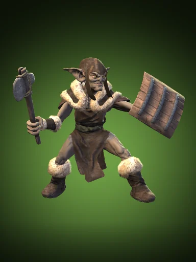
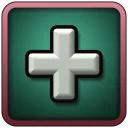
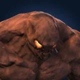
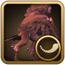
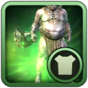
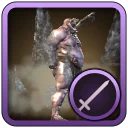
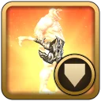
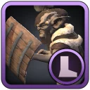
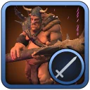
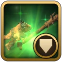

How commanders work
Choosing a commander, levels, builds and talents.
A commander is a hero that joins your board part way through the match and fights beside your units in every round after that. It costs no gold, takes no place under the unit cap, grows with your level and gains talents as you level up. This page explains the rules that all commanders share. The commanders themselves are on Commanders.
- Offered
- Round 10, in the preparation phase
- Commanders
- 4
- Extra time to choose
- 10 seconds
- If you do not choose
- The first commander in your offer, first build
- Level
- Your player level
- Talents at levels
- 4, 6, 8, 10
- Counts toward the unit cap
- No
- Can wear an item
- Yes, one
Choosing a commander
- The commander offer opens at the start of the preparation phase of round 10, once round 9 is over. That preparation phase lasts 10 seconds longer than usual.
- The offer shows all 4 commanders. Every player gets an offer of their own, and several players may pick the same commander.
- Each commander is offered with all of its builds. You pick the commander and the build in one choice.
- You can only choose during the preparation phase. If you have not chosen when combat starts, the first commander in your offer is taken for you, with its first build. The order of the offer is shuffled for each player, so this default is in effect a random commander.
- The choice is final. A commander and its build cannot be changed or sold for the rest of the match.
- The commander appears on your board at once: a melee commander in the front row, a ranged commander in the back row, as close to the centre as there is a free cell. You can then move it to any board cell you like.
The commanders
There are 4 commanders. Each has a page of its own with its full numbers.
| Commander | Role | Attack | About |
|---|---|---|---|
 Vey the Pactbinder Vey the Pactbinder | Support | Ranged | A soft-spoken broker of infernal contracts. Vey never lifts a blade herself: her pact-servants fight for her while she mends her crew with her own blood. |
 Brugg Ironjaw Brugg Ironjaw | Tank | Melee | A tusked tavern-keeper with fists like anvils. Brugg holds the front line, and the more bodies crowd around him, the harder he is to move. |
 Pip Quickfingers | Attacker | Ranged | A small, furry and extremely light-fingered menace. Pip darts around the board poisoning enemies and lifting anything that is not nailed down. |
 Fizzwick Emberhorn Fizzwick Emberhorn | Attacker | Ranged | A cackling pyromaniac with a horn full of black powder. Fizzwick sets everything he hits on fire and is happiest when the whole board is burning. |
Builds
Each commander has 2 builds. A build is a fixed kit: it decides which ultimate the commander has and which talents it is offered. The body, the passive and the core ability are the same in every build of a commander. The build is chosen together with the commander and never changes.
| Commander | Build | Idea | Ultimate |
|---|---|---|---|
| Vey the Pactbinder | Thrall Binder | Marks the weakest enemy for the whole crew to break. | Thrall Mark |
| Vey the Pactbinder | Golem Caller | Calls a Pit Golem that stuns on arrival. |  Pit Golem Pit Golem |
| Brugg Ironjaw | Barrel Roller | Rolls barrels that soften the enemy and quicken the crew. |  Barrel Barrage Barrel Barrage |
| Brugg Ironjaw | Innkeeper | Buys rounds that blunt the damage the crew takes. |  Last Round Last Round |
| Pip Quickfingers | Pickpocket | Robs the enemy at the start of every fight. |  Pickpocket Pickpocket |
| Pip Quickfingers | Brawler | Ropes every enemy into a stunning brawl. |  Free-for-All Free-for-All |
| Fizzwick Emberhorn | Bombardier | Calls in bombs on random enemies. |  Bomb Brigade Bomb Brigade |
| Fizzwick Emberhorn | Firestarter | Sends the whole crew into a frenzy. |  Wild Abandon Wild Abandon |
Passive, core and ultimate
A commander has three abilities at any time: a passive that every build shares, a core ability that every build shares, and an ultimate that belongs to the build you chose. All of them are listed on Abilities.
- Passive. Always on. It needs no cooldown: its bonuses are in place from the first moment of the fight, and anything it does at the start of combat happens then.
- Core ability. Cast on a cooldown, the same in every build of that commander.
- Ultimate. This is what sets the builds of one commander apart. Most are cast on a cooldown. Pickpocket is always on instead and works as a second passive.
In the tables, the cooldown is the wait before an ability is ready again and the cast time is how long the cast itself takes. The cooldown starts again only when a cast completes, so the time between two casts of an ability is its cooldown plus its cast time.
Vey the Pactbinder
| Slot | Ability | Cooldown | First cast after | Cast time | What it does |
|---|---|---|---|---|---|
| Passive |  Pact Retinue Pact Retinue | always on | always on | - | Vey never fights with her own hands. At the start of combat she calls her retinue, a Pact Archer and a Pact Bruiser, to fight beside her, and she regenerates 20 health per second. Calls:  Pact Archer Pact Archer Pact Bruiser Pact Bruiser |
| Core |  Blood Offering | 8 s | 4 s | 0.4 s | Vey spends 5% of her maximum health to heal every ally at once and grant them health regeneration and attack damage for 6 seconds. |
| Ultimate (Thrall Binder) | Thrall Mark | 10 s | 10 s | 0.4 s | Vey marks the weakest enemy for 6 seconds. The marked enemy loses 10 armour and takes 20% more damage from every source. |
| Ultimate (Golem Caller) | Pit Golem | 15 s | 15 s | 0.7 s | Vey calls a Pit Golem to her side. Its arrival stuns every enemy within 2 cells of her target for 2 seconds. Calls:  Pit Golem |
Brugg Ironjaw
| Slot | Ability | Cooldown | First cast after | Cast time | What it does |
|---|---|---|---|---|---|
| Passive |  Crowd Brawler Crowd Brawler | always on | always on | - | Brugg loves a crowd: he gains 5 armour for every unit next to him, friend or foe, and regenerates health. Counts at most 4 allies and 4 enemies, so the bonus tops out at 40 armour. Objects planted by items are not counted. |
| Core |  Shrug It Off Shrug It Off | 10 s | 5 s | 1.5 s | Brugg cracks his knuckles and wades in: for 5 seconds he takes 50% less damage, attacks much faster and heals for half the damage he deals. |
| Ultimate (Barrel Roller) | Barrel Barrage | 12 s | 12 s | 0.5 s | Brugg rolls barrels across the board. Three enemies take physical damage and take 20% more damage for the rest of the combat; three allies gain 50 attack speed for 5 seconds. |
| Ultimate (Innkeeper) | Last Round | 10 s | 10 s | instant | Brugg buys the whole crew a drink. For 5 seconds every ally shrugs off part of the damage it takes. |
Pip Quickfingers
| Slot | Ability | Cooldown | First cast after | Cast time | What it does |
|---|---|---|---|---|---|
| Passive |  Smoke and Mirrors Smoke and Mirrors | always on | always on | - | The first time Pip drops below half health he vanishes in a puff of smoke: he sheds his debuffs, cannot be targeted for 1.5 seconds and stuns adjacent enemies for 1.5 seconds. |
| Core |  Toxic Twirl Toxic Twirl | 3 s | 1.5 s | 0.1 s | Pip spins and flicks poisoned darts at several enemies within 3 cells, dealing physical damage and adding a stack of toxin to each. Pip heals for each dart. Pip's Toxin stacks up to 10 times. |
| Ultimate (Pickpocket) | Pickpocket | always on | always on | - | At the start of combat Pip robs a random enemy, which deals 20% less damage and attacks 20 slower, while Pip gains the same. Every enemy Pip kills drops more loot: +15 attack damage and +10 attack speed. Spoils stacks up to 10 times (+15 attack damage, +10% attack speed each time). |
| Ultimate (Brawler) | Free-for-All | 10 s | 10 s | 0.1 s | Pip ropes every enemy into a brawl: each takes physical damage, three stacks of toxin and a 1.5 second stun. Pip's Toxin stacks up to 10 times. |
Fizzwick Emberhorn
| Slot | Ability | Cooldown | First cast after | Cast time | What it does |
|---|---|---|---|---|---|
| Passive |  Kindling Kindling | always on | always on | - | Every enemy Fizzwick attacks is set on fire for 3 seconds, taking magical damage every second. He also regenerates 10 health per second. |
| Core |  Kaboom Bolt Kaboom Bolt | 12 s | 6 s | 1 s | Fizzwick hurls a fireball at his target. It bursts on the target and every enemy within 1 cell, splitting its magical damage evenly among them and setting them all on fire for 5 seconds. |
| Ultimate (Bombardier) | Bomb Brigade | 13 s | 13 s | 0.25 s | Fizzwick's goblin pals lob eight bombs onto random cells of the board. Each bomb deals magical damage to every enemy within 1 cell of where it lands and sets them on fire for 5 seconds. |
| Ultimate (Firestarter) | Wild Abandon | 10 s | 10 s | 2.3 s | Fizzwick whips the crew into a frenzy: every ally gains attack speed for the rest of the combat, and Fizzwick's attacks reach the whole board. |
The first lines under What it does are the game's own short descriptions. Many ability numbers grow with your level. The ability pages show the exact value at each level. Where a description gives a change to attack speed as a bare number, it is a percentage. Talents can replace an ability with a stronger version or add another ability; see Talents.
Level and stats
A commander has no stars and is never upgraded by combining. Its level is your own player level, read at the moment each fight begins. Level up and the commander is stronger in the very next fight, at no extra cost. The highest level is 10.
The tables show the stats that change with level; levels that share the same numbers are grouped. The stats that stay the same at every level are listed under each table.
Vey the Pactbinder
| Level | Health | Armour |
|---|---|---|
| 1 to 5 | 1,500 | 2 |
| 6 | 1,875 | 3 |
| 7 | 2,250 | 3 |
| 8 | 2,625 | 3 |
| 9 | 3,000 | 4 |
| 10 | 3,375 | 4 |
Fixed at every level: magic resistance 0%, attack range 3 cells, movement speed 275.
Vey the Pactbinder never attacks, so no attack damage or attack speed is listed, and bonuses to attacks do nothing for this commander.
Brugg Ironjaw
| Level | Health | Minimum attack damage | Maximum attack damage | Armour |
|---|---|---|---|---|
| 1 to 5 | 1,900 | 140 | 170 | 8 |
| 6 | 2,450 | 150 | 180 | 8 |
| 7 | 2,750 | 160 | 190 | 12 |
| 8 | 3,250 | 170 | 200 | 12 |
| 9 | 3,550 | 180 | 210 | 16 |
| 10 | 4,100 | 190 | 220 | 16 |
Fixed at every level: magic resistance 15%, one attack every 2 seconds, attack range 1 cell, movement speed 275.
Pip Quickfingers
| Level | Health | Minimum attack damage | Maximum attack damage |
|---|---|---|---|
| 1 to 5 | 1,600 | 90 | 115 |
| 6 | 1,900 | 100 | 125 |
| 7 | 2,200 | 110 | 135 |
| 8 | 2,500 | 120 | 145 |
| 9 | 2,800 | 130 | 155 |
| 10 | 3,100 | 140 | 165 |
Fixed at every level: armour 5, magic resistance 0%, one attack every 0.7 seconds, attack range 2 cells, movement speed 300.
Fizzwick Emberhorn
| Level | Health | Minimum attack damage | Maximum attack damage | Armour |
|---|---|---|---|---|
| 1 to 5 | 1,800 | 98 | 104 | 6 |
| 6 | 2,325 | 110 | 116 | 6 |
| 7 | 2,850 | 122 | 128 | 7 |
| 8 | 3,375 | 134 | 140 | 7 |
| 9 | 3,900 | 146 | 152 | 8 |
| 10 | 4,425 | 158 | 164 | 8 |
Fixed at every level: magic resistance 0%, one attack every 1.5 seconds, attack range 3 cells, movement speed 275.
Talents
Talents are permanent upgrades to your commander. One is unlocked at each of player levels 4, 6, 8, 10, so a commander ends a long match with 4 talents. At each unlock you are shown 2 talents and keep one. There are 36 talents in all, listed on Talents.
- Which talents you are shown is fixed by your commander and build. Nothing is rolled, so you can plan the whole path in advance from the tables below.
- A talent choice opens only during a preparation phase: at the start of the phase if your level already reaches an unlock, or the moment you buy experience and reach one.
- If you are already past one or more unlock levels when you pick your commander in round 10, those choices open straight away, one after another, lowest level first.
- A talent choice gives no extra preparation time. You have until combat starts.
- If a choice is still open when combat starts, the first talent listed (the left one in the tables below) is taken for you. This repeats for every choice still owed.
- A talent cannot be changed once taken, and the talent you passed over at that level is gone for the match.
What talents do, by number of talents: 13 replace one of the commander's abilities with a stronger version; 4 add a new ability on its own cooldown; 10 give the commander itself a lasting stat bonus; 8 give every ally a stat bonus at the start of each fight; 1 add an effect that fires on an event of the fight. A talent that replaces an ability only matters if your build has that ability.
Vey the Pactbinder
| Level | Thrall Binder | Golem Caller |
|---|---|---|
| 4 |  Hardened Hide or Hardened Hide or  Second Retainer Second Retainer | Hardened Hide or Second Retainer |
| 6 |  Deep Offering or Deep Offering or  Infernal Boost Infernal Boost | Deep Offering or Infernal Boost |
| 8 |  Searing Torment or Searing Torment or  Pain Ward Pain Ward | Searing Torment or Pain Ward |
| 10 |  Binding Mark or Binding Mark or  Warded Crew Warded Crew |  Pit Colossus orWarded Crew |
Brugg Ironjaw
| Level | Barrel Roller | Innkeeper |
|---|---|---|
| 4 |  Iron Belly or Heavy Hands Heavy Hands | Iron Belly or Heavy Hands |
| 6 |  Unbreakable or Unbreakable or  Rounds for All Rounds for All | Unbreakable or Rounds for All |
| 8 |  Haymaker or Thick Skin Thick Skin | Haymaker or Thick Skin |
| 10 |  Barrel Avalanche or Barrel Avalanche or  House Rules |  Open Bar or House Rules Open Bar or House Rules |
Pip Quickfingers
| Level | Pickpocket | Brawler |
|---|---|---|
| 4 |  Light Feet or Light Feet or  Padded Vest Padded Vest | Light Feet or Padded Vest |
| 6 |  Venom Cyclone or Venom Cyclone or  Slippery Crew Slippery Crew | Venom Cyclone or Slippery Crew |
| 8 |  Smoke Bomb or Sharp Darts Sharp Darts | Smoke Bomb or Sharp Darts |
| 10 |  Grand Heist or Grand Heist or  Nimble Crew Nimble Crew |  Grand Melee or Nimble Crew Grand Melee or Nimble Crew |
Fizzwick Emberhorn
| Level | Bombardier | Firestarter |
|---|---|---|
| 4 |  Hot Head or Hot Head or  Fireproof Apron Fireproof Apron | Hot Head or Fireproof Apron |
| 6 |  Mega Kaboom or Spark Crew Spark Crew | Mega Kaboom or Spark Crew |
| 8 |  Overcharge or Overcharge or  Wildfire Wildfire | Overcharge or Wildfire |
| 10 |  Carpet of Bombs or Carpet of Bombs or  Fire Insurance |  Total Chaos or Fire Insurance Total Chaos or Fire Insurance |
On the board
- The commander stands on your board and takes one board cell. You place it like a unit, in any cell of your half.
- It does not count toward the unit cap. You field your full number of units and the commander on top.
- It can never be moved to the bench and never be sold.
- It belongs to no alliance and never counts toward one. See How alliances count.
- It is not affected by star upgrades: there is only ever one, and it has no star level.
- It can wear one item, under the usual restrictions.
In combat
- In the fight the commander is a unit like the others. It moves, picks targets and attacks by the ordinary rules of Combat, and enemies pick it as a target by those same rules. Nothing makes it more or less likely to be attacked than a unit standing in the same place, so its position on the board is its only protection.
- Vey the Pactbinder is the exception: this commander never attacks. It still walks into range of a target, but it fights only through its abilities and the units it calls, so bonuses to attack damage, attack speed and anything else that needs an attack do nothing for it.
- It takes damage, armour and magic resistance into account as any unit does (Damage, armour and resistance), and status effects work on it normally.
- It receives bonuses meant for all allies: global items, alliance steps that affect every ally, and allied auras.
- No commander has a mana bar. Their abilities run on cooldowns instead: an ability is first cast after its first cast delay, and again each time its cooldown has run down.
- A ready ability is cast as soon as the commander is free to act, and takes its cast time like any ability. If two are ready at once, the core ability goes before the ultimate, and an ability added by a talent goes last.
- The cooldown starts again at the moment the cast completes. A cast that is interrupted by a stun or a silence is not spent: the ability is still ready and is cast again, from the start of its cast time, once the effect ends.
- A commander that is stunned or silenced cannot start a cast either. Cooldowns keep counting down all the while, so an ability that becomes ready in that time is cast as soon as the effect ends.
- An ability is also held back while there is no enemy that can be targeted, and an ability with a limited range waits until a target is within reach.
When the commander falls
- If the commander is killed it is out for the rest of that fight, like any unit. The fight goes on: your side loses only when every fighting unit is down, and a side with nothing but its commander left is still alive.
- Losing the commander costs nothing beyond that fight. It is back at full health, at its board cell, in the next round.
- Killing an enemy commander gives no special reward.
- A commander that is still standing when its side wins adds to the damage dealt to the loser: 1 before round 31, 2 from round 31. This is a flat amount and does not depend on the commander's level.
See also
- Commanders: the commanders side by side.
- Abilities: every unit and commander ability.
- Talents: every talent.
- Levels and experience: how you gain the levels that strengthen a commander.
- Loot and items: items a commander can wear.
- Summons and placeables: the units some commanders call into the fight.
- Player damage and elimination: what a surviving commander adds to the damage.